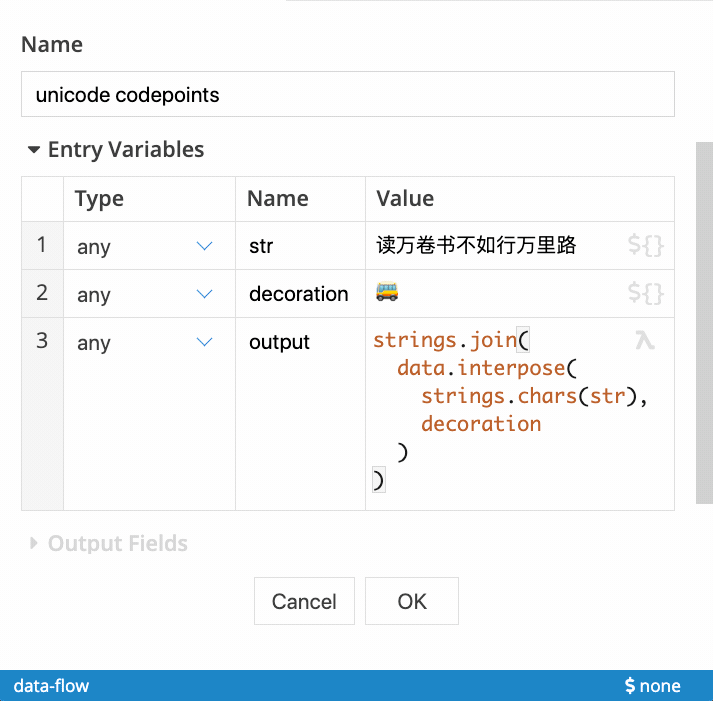

Tweakflow
A safe, embeddable scripting language for the JVM.


Why tweakflow?
JVM applications can use tweakflow to interact with users through an expression-based scripting runtime. Users can safely interact with application-provided data and the application can collect any dynamically calculated results.
Tweakflow keeps the application in control of the data exchange. Users cannot arbitrarily call into application internals.
This is in contrast to other embeddable languages like JRuby and JavaScript that have the ability to call into application internals via Java interop features, which tweakflow deliberately does not offer.
Integration Example
We’ve embedded tweakflow as the expression engine in our Tweakstreet data automation tool.
User-defined expressions are evaluated in a desktop application:

Language features
A simple computation model
Tweakflow has values and functions acting on them. All language constructs like variables, libraries, and modules merely serve to name and organize values and functions into sensible groups. Application users do not have to learn any programming paradigms to start using tweakflow expressions.
Batteries included
Tweakflow comes with a standard library that allows users to perform common tasks when working with data. Your application can limit or extend the standard library to suit its needs.
Syntax Highlighting
- HighlightJS grammar for the web
- Language Extension for VS Code / source
Test framework included
Tweakflow comes with an extensible spec framework similar to mocha, rspec, etc. The tests for the standard library are implemented with it.
Dynamically typed
Tweakflow is a dynamically typed language. Data types include booleans, strings, longs, doubles, exact decimal numbers, datetimes and functions, as well as nestable lists and dictionaries. All data types have literal notations.
All data is immutable
All values in tweakflow are immutable. It is always safe to pass values between user expressions and the host application without worrying about mutable state or object identity.
All functions are pure
All functions in tweakflow are pure and free of observable side-effects. A tweakflow function, given the same arguments, will always return the same result. The host application handles all non-pure operations like file I/O.
Embedded documentation and meta-data
Tweakflow supports documentation annotations as well as arbitrary meta-data on variables, libraries and modules. This feature supports interactive help as well as automated generation of project documentation.